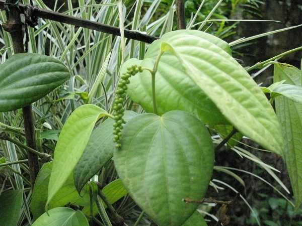

Piper nigrum (bush type)
Common Names: Bush Pepper, Dwarf Pepper, Compact Black Pepper
Local Name: Milagu (Tamil), Kali Mirch (Hindi), Kurumulaku (Malayalam)
Family: Piperaceae
Origin: Tropical Asia; dwarf selections from Piper nigrum cultivars
Plant Type: Compact bush pepper, 1–2 meters (no support needed)
Variety: Bush type — propagated from lateral (plagiotropic) branches of climbing pepper
Average Lifespan: 10–15 years with proper care
| Growth Habit | Compact, bushy, non-climbing; derived from lateral (fruiting) branches of climbing pepper |
| Plant Size | 1–2 meters tall; spreading bushy form; no climbing support required |
| Leaves | Alternate, ovate, 6–12 cm long, dark glossy green, slightly smaller than climbing types |
| Flowers | Small, white-green, on pendulous spikes (catkins) 4–10 cm long |
| Flower Characteristics | Similar to climbing pepper; protogynous; self-pollinating; flowers freely on compact frame |
| Fruit | Spherical drupes, 3–5 mm; identical to standard black pepper; borne on shorter spikes |
| Fruit Color | Green when immature, red when ripe; dried to black peppercorns |
| Seed Characteristics | Single seed per drupe; same piperine content as climbing varieties |
| Root System | Fibrous, shallow root system; no adventitious climbing roots |
| Climate | Tropical to warm subtropical; prefers warm, humid conditions |
| Temperature Range | 20–35°C ideal; protect from temperatures below 15°C; frost-sensitive |
| Rainfall Requirement | 1000–2000 mm annually; or regular watering in drier climates |
| Soil Type | Well-drained potting mix rich in organic matter; cocopeat-compost-perlite blend ideal |
| Soil pH Preference | 5.5–6.5 |
| Sun Requirement | Partial shade to bright indirect light; 4–6 hours filtered sunlight |
| Spacing | 1–1.5 meters if planted in ground; single plant per pot |
| Irrigation Method | Regular watering; keep soil consistently moist but not waterlogged |
| Water Requirement | Moderate; water when top 2 cm of soil feels dry; mist leaves in dry weather |
| Can it Grow in Pots? | Yes — ideal for pots (15–25 liters); perfect for balconies, patios, and small gardens |
| Fertilizer Schedule | Light feeding every 4–6 weeks during growing season; reduce in winter |
| Recommended Organic Fertilizers | Vermicompost, diluted fish emulsion, compost tea, neem cake (small quantities) |
| Pesticide Frequency | Minimal; inspect regularly; treat only when pests appear |
| Recommended Organic Pesticides | Neem oil spray, insecticidal soap; good air circulation prevents most issues |
| Mulching Practice | Light organic mulch (coconut coir, dried leaves) on soil surface; helps retain moisture |
| Training System | No support needed; allow natural bushy growth; optional light staking for heavy fruiting branches |
| Pruning Time | After harvest; light pruning any time to maintain shape |
| How to Prune | Tip-prune to encourage branching; remove any vertical climbing shoots to maintain bush form |
| Common Pests | Mealybugs, aphids, spider mites (especially indoors); scale insects |
| Common Diseases | Root rot (from overwatering), leaf spot, powdery mildew in poor ventilation |
| Disease Prevention & Remedies | Well-draining soil, avoid overwatering, good air circulation, neem oil for fungal issues |
| Flowering Months | May–August in tropical conditions; can flower year-round in warm climates |
| Fruiting Season | November–March; 5–7 months after flowering |
| Days to Harvest | 150–210 days from flowering; first fruit from 2nd year |
| Harvest Indicators | Berries turn from green to yellowish-red; harvest when 1–2 berries per spike change color |
| Average Yield per Plant | 100–500 g dry pepper per plant per year; modest but rewarding for home use |
| Pollination Type | Self-pollination; no pollinators required |
| Pollination Notes | Flowers are self-fertile; gentle shaking or breeze helps pollen transfer on compact spikes |
| Pollination Details | Self-pollinating; protogynous flowers; good fruit set without intervention |
| Propagation by Seeds | Possible but seedlings may revert to climbing habit; not recommended |
| Propagation by Cuttings | Lateral (plagiotropic) branch cuttings only; 2–3 nodes; root in 30–45 days in humid conditions |
| Propagation by Grafting | Not practiced; tissue culture used for commercial-scale bush pepper production |
| Water Usage | Low; compact size means minimal water requirement compared to climbing types |
| Soil Conservation Practices | Container growing eliminates soil erosion concerns; organic potting mixes are sustainable |
| Organic Practices Used | Ideal for organic home growing; compost, vermicompost, natural pest management |
| Companion Plants | Curry leaf, tulsi, lemongrass (in adjacent pots); larger plants provide partial shade |
| Biodiversity Benefits | Encourages home spice growing; reduces transport footprint of imported spices |
| Commercial Production Regions | Nursery trade in Kerala, Karnataka; growing popularity in urban gardening markets |
| Market Uses | Home-grown fresh peppercorns, ornamental spice plant, nursery plant sales |
| Processing Uses | Fresh green pepper for cooking, dried black pepper for home use |
| Market Value (Approx.) | ₹150–400 per plant (nursery); home-grown pepper saves ₹500–700/kg retail cost |
| Symbolism | Represents the democratization of spice growing; bringing the "King of Spices" to every balcony |
| Traditional Uses | Fresh green peppercorns used in Kerala cuisine; growing your own pepper is a point of pride in South Indian homes |
| Anxiety & Sleep | Same medicinal properties as climbing pepper; piperine has mild calming effects |
| Immune Support | Fresh green peppercorns retain more volatile oils; traditional cold remedy ingredient |
| Anti-inflammatory Properties | Piperine content comparable to climbing varieties; anti-inflammatory benefits preserved |
| Heart Health | Supports nutrient absorption; piperine enhances bioavailability of beneficial compounds |
| Digestive Health | Fresh pepper aids digestion; stimulates appetite and enzyme secretion |
Disclaimer: Information provided is for educational purposes only and not a substitute for medical advice.
Add your field observations here.